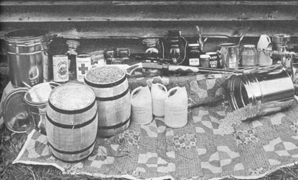

H ave you heard the news today? Energy crunch, money crisis, shortages . . . and predictions of worldwide famine within two years because the population of the earth is exceeding the productive capacity of the land.
What can you do to protect yourself and your family? One of the best insurance policies to own in these times is a year's supply of food. (Ideally, the planning should include other necessities too, since warmth, cleanliness, medication and so on may also be essential to your own survival and that of your loved ones.) Once you prepare yourself to live for a twelve-month period without any income, you'll find that you're ready for strikes, floods, earthquakes, power failures, unemployment, tornadoes, war, epidemics, riots, etc. The feeling of security is fantastic!
The main theme of any survival program is "Rely on yourself". In a true emergency or panic, grocery stores would be out of staples in a few hours and completely emptied of food in about two days. Their wholesalers' supplies would be exhausted within a week.
And don't expect public or private social agencies to step in and fill the gap. The Red Cross has limited resources that are already overtaxed. Even the government and the many service organizations it sponsors may not be willing or able to subsidize everyone during a large-scale disaster . . . and certainly not during a depression. Here, then, is a step-by-step plan to offer you the best chance of getting through the worst the future can hold.
Water is the first and most basic need for survival. You can live for weeks without food but only two or three days at the most without this precious fluid. In the event of nuclear disaster, terrorist sabotage, tornado, chemical and bacterial warfare or accident, the public water supply may become contaminated. Therefore, your own cache is of prime importance.
You should have on hand one gallon of good drinking water per person per day for a period of two to three weeks. This is a survival ration which precludes bathing, dishwashing, shampooing and other uses which are not absolutely essential. If you live in an arid climate, you may feel more secure with a larger reserve. If your home is in a remote area and has a deep well, you might get by with less. Whatever your situation, though, the establishment of a water cache is very important and very inexpensive. Do it now!
Storage of a water supply is extremely flexible. Some people use tanks, or purchase five-gallon jerrycans. The most inexpensive scrounge method I've ever seen anyone put together consists of making rather daily rounds to laundromats to collect empty Clorox jugs (plastic containers which have held various other products may allow harmful or distasteful residues to leach into your reserve.) The bottles are filled from an indoor tap, identified as "DRINKING WATER" with a Marks-A-Lot or other felt-tipped marking pen (remove the paper label first) and squirreled away in odd nooks and crannies around the house wherever space permits. If four drops of any 5-1 /2 or 6% hypochlorite bleach such as Clorox or Purex are added at bottling time, the liquid will remain sweet for years . . . except for a flat taste which is easily cured by aeration before use.
If you can your garden produce, the jars-as they are emptied-may be filled with water for storage and thus made useful the year round. Should you choose to hot pack such containers and close them with caps that seal, don't add chlorine. The canning procedure will eliminate any bacteria.
The second pressing need in any survival program is for an advance supply of drugs for those who must take medication on a regular basis. This group includes heart patients, epileptics, diabetics, women who must-for health reasons-avoid pregnancy and all others whose lives might depend on a store of medicine. Visit your doctor and explain to him that-in case a strike of pharmaceutical company employees or truckers, or a civil disturbance, should temporarily deprive you of your supply of drugs or access to their source-you would like a standby reserve.
Whatever you do, do not store away the extra medication your doctor arranges for you. Use your regular supply, then the reserve . . . which, in turn, has just been replaced with your next prescription. Thus, you'll always rotate your stock to keep the drugs fresh. If possible, use this method over a period of time to build up a year's supply of medication and make sure you have at least two weeks' reserve to start.
The third priority in your survival program is a food supply of at least two weeks' balanced diet. The very best advice on this subject available at present is the U.S. Department of Agriculture Home and Garden Bulletin No. G77, Family Food Stockpile for Survival, available free from the Office of Information, U.S. Department of Agriculture, Washington, D.C. 20250. Although the publication is very much slanted to the home fallout shelter enthusiasm of the late 1950's, the information it contains is solid and applicable to present situations. The booklet covers storage and replacement of foods, sample meals and menus, cooking and serving equipment, storage and purification of water and recordkeeping.
If you live in a large city, you will have to expect-at some time or another in a survival situation-to defend your life and goods. There may come a period when the law of the jungle is the only law in effect, and you will be forced to live by it or be killed. I feel a considerable amount of revulsion at the idea of deliberately harming another human being, and would rather protect myself by avoidance. I find, however, that I must face the prospect of being unable to escape a confrontation and having to defend myself and my own.
In the role of defender, one should choose a weapon that is inexpensive, easily used by male or female and adequate to stop an aggressor (not necessarily to kill one). Make sure all who are to use it are thoroughly trained. Remember, firearms are always dangerous and should never be stored loaded. Keep all arms and ammunition out of the reach of children.
On a less grim note, the right knowledge at the right time can be as valuable a safeguard as any weapon. Take first aid training, or at least buy a manual and study it. Enroll in civil defense courses on survival and emergency preparedness. If you have the time and inclination, you might even try an outdoor survival course or a field trip series on foraging.
If you have trusted friends who feel as you do about the need to prepare for difficult times, you might give thought to working out a mutual assistance program. A word of caution, though: It would be nice if everyone were honest . . . but-as has been proven in hard times all through history-some folks who suddenly find themselves in a tight situation get desperate, throw character to the winds and become downright savage. A hard-working Mormon family I know had their food supply ripped off and I discovered someone close to me planning the same thing. So be sensitive and careful, and choose your companions well.
A year's food supply is the next priority . . . but before you begin gathering your stock, you'll need someplace to store it. This may be a retreat, root cellar, garage, house or barn. Wherever the cache, it must be accessible and secure against spoilage and oxidation, rodents, insects, water damage and extremes of heat and cold. The best temperature range is 55° to 65° F.
Storage containers must be tailored to the space available and the type and amount of food. A secondary consideration is convenient handling of the stored provisions for consumption and stock rotation.
Most discount paint supply stores carry five-gallon round and square metal cans (such as thinner is sold in), and five-gallon lidded pails of the type used for paint and asphalt. Locally these cost $1.75 to $2.00 each. Some companies make a specialty of the same items in white plastic-new and used-for about the same price. Paint manufacturers will often sell brand-new one-gallon metal coin. with friction lids, or will refer you to their supplier.
Sears and Montgomery Ward both catalog a heat-sealing device for use on heavy-duty poly bags. Institutions with large cafeterias-schools, colleges, factories, etc.-throw away gallon jars in both glass and plastic. Used plastic jugs practically litter the landscape.
Do not attempt to store food in any container that has held petroleum products. The residue will ruin the smell and taste of your stash . . . and may ruin you, too, if you eat food stored in such a can or jar. Wheat and flour will absorb petroleum odors even when the food is sealed in plastic.
As you choose your food storage containers, remember that rats and mice can and will chew rapidly through a plastic bag or can to get at its contents, and that metal will eventually rust. You can shellac a metal can to prevent the rust, of course, but shellac often costs more than a new container.
Weevils love soap residue, so-even if you don't use detergent for dishes-it's a good idea to keep a small amount of the soap substitute around for cleaning food storage containers . . . after which you can get down to filling them.
WHEAT should be the first staple put into storage, since it's the most versatile and nutritious low-cost source of protein and can be made into a meat substitute called gluten. (See Passposrt to Survival by Esther Dickey-$3.95 from Bookcraft Publishers, 1848 West 2300 South, Salt Lake City, Utah 84120, or from MOTHERS Bookshelf for instructions on the preparation and use of gluten . . . and many other excellent survival food recipes.-MOTHER.) Three hundred pounds is an average year's ration for an adult female. A grown man will need about 100 pounds more per year and a child about 100 pounds less . . . so, if your males and children balance, figure 300 pounds per person. Don't count on young children remaining small, however. As their appetites grow, so should their reserve food supply.
Hard winter wheat (Turkey Red) or hard spring wheat (Marquis) is the best to store. It should be Grade 1, with a protein content of 11.5% and less than 10% moisture. Separate all foreign matter from the kernels and put the grain into clean, dry containers.
I know a lady who lives in a dry area of California. Her wheat storage system consists of a eucalyptus tree and a row of 88 cents plastic garbage cans. She buys uncleaned wheat at the feed store for 10 cents per pound, cleans it herself by winnowing on a windy day and then spreads the grain on an old window screen so she can pick out stones and such. Next, she pours an empty can three-quarters full of wheat, mixes in a double handful of eucalyptus leaves, places the fresh container at the end of a line of six and puts the lid on, weighting it with a gaily painted brick. Then she takes the makings for bread, cereal, etc., from Can No. 1 at the head of the line, thus rotating her supply. Once a year this lady aerates any unused grain, inspects it by pouring the kernels from one can to another and adds fresh leaves. She swears they keep out the weevils, and it certainly seems to work for her. I've heard the same said for newly picked bay laurel leaves.
Another way to eliminate both insect eggs and moisture-and a method that also works for beans, peas, nuts, etc.-is to fill a shallow pan three-quarters of an inch deep with whatever it is you're storing and heat the food to 150° F for 20 minutes, cool it and store it in an airtight container.
If you have to worry about rodents invading your food stash, you can protect it as follows: Gad about to the discard piles of any restaurants which serve deep-fat-fried food and look for five-gallon metal cans with two-inch openings (standard institutional packing for liquid shortening). Note that such a container holds about one-third hundredweight of wheat. That is, nine five-gallon cans are needed for 300 pounds of the grain, an average person's yearly supply.
Clean the containers well with hot soapy water so that no trace of fat remains to go rancid in storage. A very good way to do this is with five or six doses of hot sudsies from the drain hose of a washing machine, if you have access to one. (If you don't want to go through all this, of course, you can just buy new cans.)
OK. Set out your cleaned cans and your cleaned wheat. Then go and buy some dry ice. Drop a piece of the frozen carbon dioxide the size of a walnut (or two crushed ounces) into the bottom of each container and pour in about 33 pounds of grain. Leave the lids sitting loosely on top of the cans about 12 hours-or overnight-while the dry ice evaporates into carbon dioxide (an inert gas which displaces oxygen). Then screw the tops down tight . . . but be careful not to do this until evaporation is complete, or the buildup of pressure will cause the cans to explode. If you notice any bulging containers, loosen the lids at once to allow the gas to escape.
When you're finished with this process, your grain will be well protected. No insect eggs will hatch without oxygen . . . and, of course, no oxidation will take place either.
There's still another method for the long-term storage of grains and legumes that might appeal to you. A bag of diatomaceous earth-the fossil remains of one-cell marine diatoms-may be purchased from a pool supply firm and a handful tossed in with the food that is to be stored . . . whatever the container (even plastic and paper bags). Diatomaceous earth is a desiccant to insects and can also be dusted carefully on animals to kill fleas and mites, applied to plants in the garden for pest control and used to reduce the fly and odor problem when disposing of human or animal feces. It's non-toxic when ingested, harmless to the environment and very inexpensive.
After you've learned how to store wheat, you may also have to learn how to serve it. The grain can be sprouted, or eaten as a grass . . . or it can be steamed or cooked in a double boiler or pressure cooker-or even a thermos jug-to make a good nutritious cereal. The addition of a grain mill, however, raises your standard of survival living by 500%. With grinding equipment handy you can have flour for bread and gluten, cracked wheat, mush for babies, the elderly or infirm . . . and so on. By all means, then, keep a mill along with your hoard of grain and learn to use it efficiently.
Of the several good makes available, I personally prefer the Corona . . . manual, because the exercise is good for me and I'm immune to loss of milling ability due to power failure. Some electric grain mills are advertised as being hand operable in case the electricity cuts out. I'm not sure I'd want to be on the cranking end of such a machine-grinding grain and turning a powerful motor too-but I've never tried and may be wrong in assuming that it's more difficult than operating my own model. (Incidentally, see MOTHER NO. 7, pages 56-58, for a very good article entitled "When You Own a Corona".)
(EDITORS NOTE: We here at MOTHER preferred the Corona too . . . until we discovered the Quaker City mill. It looks almost identical to the Corona but has better "innards" which crank much easier and which produce a finer quality flour.)
MILK is the second food to store. If your supply is canned, the containers should be kept at a temperature of 40° F and turned over every month or so to avoid or minimize fat separation. The product will keep a year this way, but may darken in color as the storage period lengthens. If the fat does separate in a can, shake the container vigorously for a few minutes before opening-or place the contents in a jar and shake-to restore the milk to a smooth-pouring, creamy consistency.
Powdered milk is somewhat easier to deal with for long-term storage. It seems, though, that just the mention of the stuff brings shouts and groans of protest from any group of people. Of course the dried beverage doesn't compare with fresh cows' or goats' milk, and I myself used to avoid it like castor oil. But remember, we're talking about survival . . . and we don't all have cows or goats, especially any that are fresh year round. And milk, even if you don't drink it, is essential to cooking and baking.
There are two kinds of powdered milk. The first is fat-free and-unless fortified-lacks the fat-soluble vitamins A and D. When the product is kept dry and cool, you can estimate its storage life at three to five years.
The other type is powdered whole milk with all the fat and vitamins left in (important if you have a baby). The only brand I've found in this category is Milkman. I was given a sip by a fellow backpacker somewhere in the wilds of the San Gabriel Mountains and thought the good taste was perhaps due to fresh-air appetite . . . but when I sampled the same thing at home, the flavor and low price convinced me to use this brand exclusively. If you want to try my favorite, it's available by mail order from several outdoor outfitters.
Whole dried milk must be kept cool and used within one year. If you drink milk anyway, however, it's no problem to rotate your supply while keeping 12 months ahead. One good plan is to use the dried product half and half with whole milk. This ensures turnover and also stretches your budget. Or the powder alone can be used in cooking, with very good results. The trap to avoid is using your stock when you're a little short of money. . . and then failing to replace it.
Stored dried milk picks up odors very easily (no eucalyptus leaves for this item!) and must at all costs be protected from infiltration by moisture, which will alter or destroy its flavor over a period of time. A practical amount of milk to set aside is 100 pounds per person per year.
SALT-not a true food, but a mineral essential to wellbeing-is third on the list of items to be stored. About five pounds per person per year in temperate climates, and as much as ten pounds in hot climates, will do for table use in a survival situation.
Iodized or sea salt-depending on your budget-is the preferred choice for personal use. An uniodized version, however, is available in five-pound bags at one-quarter the cost of regular salt. This product is very coarse and suitable for pickling, salting and canning, but may also be used as seasoning if you have another access to iodine in your diet.
Packed in an airtight container and stored in a cool, dry place, salt will keep for many years. (A slight yellowish discoloration due to free iodine may take place in the iodized product, but this is harmless.) A good technique is to pour your stock into plastic gallon jugs, which will usually hold about 12 pounds. Don't forget, though, that little beasties will gnaw plastic to get the goodies inside . . . and salt is certainly a goody.
HONEY is the last absolutely essential survival food. It's the most desirable of the sweetening agents: the most versatile and the best for you. Besides natural sugars and beneficial enzymes, honey contains trace quantities of vitamin C, protein and iron. It keeps indefinitely, contains about 400 less calories per pound than sugar, tastes twice as sweet, goes one-third farther . . . and, unfortunately, is more expensive.
Bacteria cannot survive in pure crystalline honey, which is the only kind worth storing. Don't throw away your money on a processed, pasteurized or altered product, or one to which water has been added. If your source is a supermarket, read the labels carefully and remember that grades refer to degrees of filtering. "Grade A Fancy" indicates that the jar's contents have been filtered through the finest screen. "Choice" is the least tampered with.
If the temperature of your stored honey reaches or exceeds 75° F, the sweetening will lose some of its flavor and color. Also, all pure, unprocessed honey will crystallize no matter how it's kept. Some folks enjoy using it in that form (it spreads like butter) . . . but if you want to return crystallized honey to a liquid consistency you can set the container of the sweetening in a pan of water and heat it to 150°-180° F. It takes a long time to liquefy a five-pound batch. Just write a letter or weed the garden and stir the mess a bit now and then.
Honey is most conveniently kept, in half-gallon or in five-pound cans. (It's a good idea to minimize the use of glass in your food program lest breakage rob you of your provisions and make an incredible mess.) If you choose to store this sweetening in five-gallon containers-which hold 60 pounds each-keep in mind that you'll probably have to liquefy the whole canful every time you want to use some of the contents. The average amount needed by an adult is 60 to 100 pounds a year.
In closing, I'd like to mention a possibility for city dwellers: to establish a hideaway in a remote area at least 250 miles from a large center such as Los Angeles, New York, Dallas, Atlanta, New Orleans, etc .... or to arrange a means of getting that far away should need arise. The retreat may be anything from a car, van or microbus with cardboard boxes of food, camping stove, water, clothes and radio . . . to a well-stocked camper and a set of road maps . . . to a rustic desert or woodland cabin . . . to a full-time working homestead.
Whatever you want or can afford, make sure that it's as comfortable as possible, that it's a solution you can live with and that you can get there when times are rough. (Try not to select a place you couldn't reach with your own, average, on-hand supply of gas, for instance.) Take your vacations at your hide-out, live with it, work the bugs out of the system, make friends with the people, drive a well, plant fruit trees. Perhaps you'd rather just move to a small town. Do whatever makes you feel most secure.
Meanwhile, the survival program I've outlined will ensure food and water for any likely crisis or disaster . . . in a form that's compact to store and nutritionally adequate and at a minimum cost of $50 to $150 per person. If you follow the suggestions given here in the proper sequence, you'll find yourself better prepared and more confident about the future than you ever thought possible.
|
|
 |
|